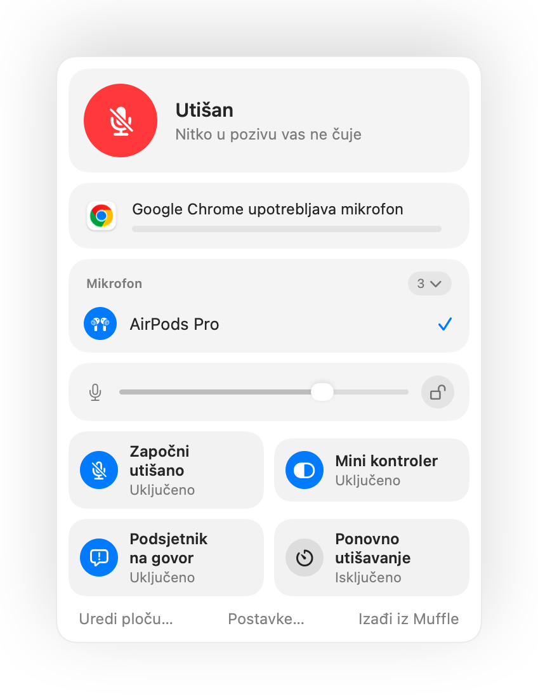

AirPods utišavanje ne radi na Macu? Evo rješenja
macOS vam omogućuje utišavanje poziva pritiskom na stapku slušalica AirPods, ali samo ako aplikacija za pozive to podržava. Mnoge aplikacije to ne podržavaju, uključujući Chrome i web pozive unutar njega. Pritisnete stapku, čujete kratki zvuk pogreške, vidite poruku „Cannot Control Mic”, a sugovornici u pozivu vas i dalje čuju.
Muffle donosi tu podršku u svaku aplikaciju. Preuzima pritisak, utišava mikrofon na vašem Macu i reproducira uobičajeni zvuk za utišavanje.
Omogućite utišavanje svake aplikacije pritiskom na AirPods
- Instalirajte Muffle i dopustite pristup mikrofonu. macOS šalje pritisak samo onim aplikacijama koje mogu upotrebljavati mikrofon.
- Provjerite je li uključena opcija „Utišajte i uključujte pritiskom na AirPods” u izborniku Postavke Muffle.
- Pridružite se pozivu. Pritisak utišava zvuk samo dok neka aplikacija aktivno upotrebljava mikrofon.
- Pritisnite stapku jednom da biste utišali mikrofon i ponovno da biste ga uključili.

- Izvan poziva, pritisak i dalje reproducira i pauzira glazbu kao i obično.
- Ako vaše AirPods slušalice upotrebljavaju drukčiji pritisak za upravljanje pozivima, provjerite postavke slušalica AirPods u aplikaciji Postavke sustava.
Pitanja
Zašto moj Mac reproducira zvuk pogreške kada pritisnem AirPods?
Aplikacija u kojoj vodite poziv ne podržava pritisak za utišavanje na slušalicama AirPods, pa ga macOS odbacuje. Dok Muffle radi u pozadini, taj pritisak umjesto toga utišava mikrofon.
Koji modeli AirPods slušalica podržavaju pritisak za utišavanje?
AirPods Pro, AirPods 3 i noviji modeli, kao i AirPods Max te modeli Beats koji nude kontrole poziva.